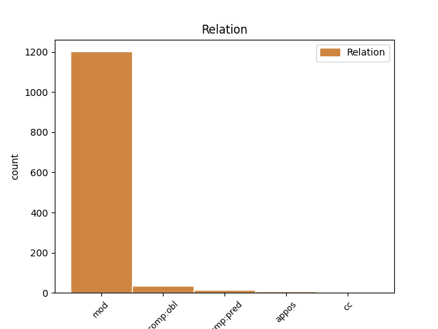
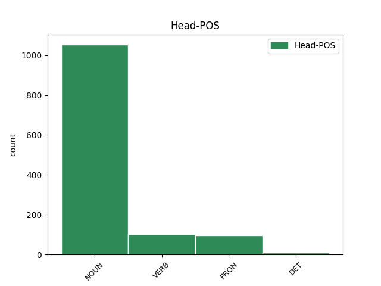
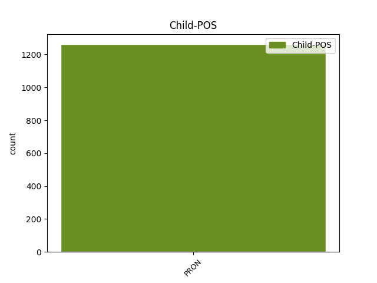

Distribution of features within this leaf



Agreement Rules sorted by frequency.
- When the dependent token is the modifer(mod) of the head token, and the head token is NOUN and the dependent token is PRON.
1 λευρὸν _ _ _ _ 0 _ _ _
2 κατ̓ _ _ _ _ 0 _ _ _
3 ἄλσος ἄλσος NOUN n-s---na- Case=Acc|Gender=Neut|Number=Sing 0 _ _ _
4 νῦν _ _ _ _ 0 _ _ _
5 ἐπιστρέφου _ _ _ _ 0 _ _ _
6 τόδε ὅδε PRON p-s---na- Case=Acc|Gender=Neut|Number=Sing 3 mod _ SpaceAfter=No
7 . _ _ _ _ 0 _ _ _
1 δοκοῦσι _ _ _ _ 0 _ _ _
2 γὰρ _ _ _ _ 0 _ _ _
3 οἱ _ _ _ _ 0 _ _ _
4 Βοιωτοὶ _ _ _ _ 0 _ _ _
5 κατὰ _ _ _ _ 0 _ _ _
6 τὰς _ _ _ _ 0 _ _ _
7 τῶν _ _ _ _ 0 _ _ _
8 δεινῶν _ _ _ _ 0 _ _ _
9 ὑπομονὰς _ _ _ _ 0 _ _ _
10 καὶ _ _ _ _ 0 _ _ _
11 τοὺς _ _ _ _ 0 _ _ _
12 πολεμικοὺς _ _ _ _ 0 _ _ _
13 ἀγῶνας _ _ _ _ 0 _ _ _
14 μηδενὸς μηδείς PRON p-s---mg- Case=Gen|Gender=Masc|Number=Sing 0 _ _ _
15 λείπεσθαι _ _ _ _ 0 _ _ _
16 τῶν _ _ _ _ 0 _ _ _
17 ἄλλων ἄλλος PRON p-p---mg- Case=Gen|Gender=Masc|Number=Plur 14 mod _ SpaceAfter=No
18 · _ _ _ _ 0 _ _ _
1 τῶν ὁ PRON p-p---mg- Case=Gen|Gender=Masc|Number=Plur 4 mod _ _
2 δ̓ _ _ _ _ 0 _ _ _
3 ὕπο _ _ _ _ 0 _ _ _
4 σευομένων σεύω VERB v-pppemg- Case=Gen|Gender=Masc|Number=Plur|Tense=Pres|VerbForm=Part|Voice=Mid 0 _ _ _
5 κανάχιζε _ _ _ _ 0 _ _ _
6 πόσ̓ _ _ _ _ 0 _ _ _
7 εὐρεῖα _ _ _ _ 0 _ _ _
8 χθών _ _ _ _ 0 _ _ _
9 . _ _ _ _ 0 _ _ _
1 οὐ _ _ _ _ 0 _ _ _
2 γὰρ _ _ _ _ 0 _ _ _
3 ἑτέρων _ _ _ _ 0 _ _ _
4 πεπυσμένος _ _ _ _ 0 _ _ _
5 , _ _ _ _ 0 _ _ _
6 ἀλλ̓ _ _ _ _ 0 _ _ _
7 αὐτὸς αὐτός PRON p-s---mn- Case=Nom|Gender=Masc|Number=Sing 10 comp:pred _ _
8 ἔργῳ _ _ _ _ 0 _ _ _
9 πεῖραν _ _ _ _ 0 _ _ _
10 εἰληφὼς λαμβάνω VERB v-srpamn- Aspect=Perf|Case=Nom|Gender=Masc|Number=Sing|Tense=Past|VerbForm=Part|Voice=Act 0 _ _ _
11 ἐγίνωσκε _ _ _ _ 0 _ _ _
12 πόσῳ _ _ _ _ 0 _ _ _
13 τῆς _ _ _ _ 0 _ _ _
14 τῶν _ _ _ _ 0 _ _ _
15 Περσῶν _ _ _ _ 0 _ _ _
16 τρυφῆς _ _ _ _ 0 _ _ _
17 ἡ _ _ _ _ 0 _ _ _
18 πάτριος _ _ _ _ 0 _ _ _
19 δίαιτα _ _ _ _ 0 _ _ _
20 πρὸς _ _ _ _ 0 _ _ _
21 ἀρετὴν _ _ _ _ 0 _ _ _
22 διέφερεν _ _ _ _ 0 _ _ _
23 . _ _ _ _ 0 _ _ _
1 Δήμητῤ Δήμητηρ NOUN n-s---fa- Case=Acc|Gender=Fem|Number=Sing 0 _ _ _
2 ἠύκομον _ _ _ _ 0 _ _ _
3 , _ _ _ _ 0 _ _ _
4 σεμνὴν _ _ _ _ 0 _ _ _
5 θεόν _ _ _ _ 0 _ _ _
6 , _ _ _ _ 0 _ _ _
7 ἄρχομ̓ _ _ _ _ 0 _ _ _
8 ἀείδειν _ _ _ _ 0 _ _ _
9 , _ _ _ _ 0 _ _ _
10 αὐτὴν αὐτός PRON p-s---fa- Case=Acc|Gender=Fem|Number=Sing 1 appos _ _
11 ἠδὲ _ _ _ _ 0 _ _ _
12 θύγατρα _ _ _ _ 0 _ _ _
13 τανύσφυρον _ _ _ _ 0 _ _ _
14 , _ _ _ _ 0 _ _ _
15 ἣν _ _ _ _ 0 _ _ _
16 Ἀιδωνεὺς _ _ _ _ 0 _ _ _
17 ἥρπαξεν _ _ _ _ 0 _ _ _
18 , _ _ _ _ 0 _ _ _
19 δῶκεν _ _ _ _ 0 _ _ _
20 δὲ _ _ _ _ 0 _ _ _
21 βαρύκτυπος _ _ _ _ 0 _ _ _
22 εὐρύοπα _ _ _ _ 0 _ _ _
23 Ζεύς _ _ _ _ 0 _ _ _
24 , _ _ _ _ 0 _ _ _
25 νόσφιν _ _ _ _ 0 _ _ _
26 Δήμητρος _ _ _ _ 0 _ _ _
27 χρυσαόρου _ _ _ _ 0 _ _ _
28 , _ _ _ _ 0 _ _ _
29 ἀγλαοκάρπου _ _ _ _ 0 _ _ _
30 , _ _ _ _ 0 _ _ _
31 παίζουσαν _ _ _ _ 0 _ _ _
32 κούρῃσι _ _ _ _ 0 _ _ _
33 σὺν _ _ _ _ 0 _ _ _
34 Ὠκεανοῦ _ _ _ _ 0 _ _ _
35 βαθυκόλποις _ _ _ _ 0 _ _ _
36 ἄνθεά _ _ _ _ 0 _ _ _
37 τ̓ _ _ _ _ 0 _ _ _
38 αἰνυμένην _ _ _ _ 0 _ _ _
39 , _ _ _ _ 0 _ _ _
40 ῥόδα _ _ _ _ 0 _ _ _
41 καὶ _ _ _ _ 0 _ _ _
42 κρόκον _ _ _ _ 0 _ _ _
43 ἠδ̓ _ _ _ _ 0 _ _ _
44 ἴα _ _ _ _ 0 _ _ _
45 καλὰ _ _ _ _ 0 _ _ _
46 λειμῶν̓ _ _ _ _ 0 _ _ _
47 ἂμ _ _ _ _ 0 _ _ _
48 μαλακὸν _ _ _ _ 0 _ _ _
49 καὶ _ _ _ _ 0 _ _ _
50 ἀγαλλίδας _ _ _ _ 0 _ _ _
51 ἠδ̓ _ _ _ _ 0 _ _ _
52 ὑάκινθον _ _ _ _ 0 _ _ _
53 νάρκισσόν _ _ _ _ 0 _ _ _
54 θ̓ _ _ _ _ 0 _ _ _
55 , _ _ _ _ 0 _ _ _
56 ὃν _ _ _ _ 0 _ _ _
57 φῦσε _ _ _ _ 0 _ _ _
58 δόλον _ _ _ _ 0 _ _ _
59 καλυκώπιδι _ _ _ _ 0 _ _ _
60 κούρῃ _ _ _ _ 0 _ _ _
61 Γαῖα _ _ _ _ 0 _ _ _
62 Διὸς _ _ _ _ 0 _ _ _
63 βουλῇσι _ _ _ _ 0 _ _ _
64 χαριζομένη _ _ _ _ 0 _ _ _
65 Πολυδέκτῃ _ _ _ _ 0 _ _ _
66 , _ _ _ _ 0 _ _ _
67 θαυμαστὸν _ _ _ _ 0 _ _ _
68 γανόωντα _ _ _ _ 0 _ _ _
69 · _ _ _ _ 0 _ _ _
1 πρῶτα _ _ _ _ 0 _ _ _
2 μὲν _ _ _ _ 0 _ _ _
3 τὸν _ _ _ _ 0 _ _ _
4 Εὐφρήτην _ _ _ _ 0 _ _ _
5 ποταμὸν ποταμός NOUN n-s---ma- Case=Acc|Gender=Masc|Number=Sing 0 _ _ _
6 ῥέοντα _ _ _ _ 0 _ _ _
7 πρότερον _ _ _ _ 0 _ _ _
8 ἰθύν _ _ _ _ 0 _ _ _
9 , _ _ _ _ 0 _ _ _
10 ὅς _ _ _ _ 0 _ _ _
11 σφι _ _ _ _ 0 _ _ _
12 διὰ _ _ _ _ 0 _ _ _
13 τῆς _ _ _ _ 0 _ _ _
14 πόλιος _ _ _ _ 0 _ _ _
15 μέσης _ _ _ _ 0 _ _ _
16 ῥέει _ _ _ _ 0 _ _ _
17 , _ _ _ _ 0 _ _ _
18 τοῦτον οὗτος PRON p-s---ma- Case=Acc|Gender=Masc|Number=Sing 5 comp:pred _ _
19 ἄνωθεν _ _ _ _ 0 _ _ _
20 διώρυχας _ _ _ _ 0 _ _ _
21 ὀρύξασα _ _ _ _ 0 _ _ _
22 οὕτω _ _ _ _ 0 _ _ _
23 δή _ _ _ _ 0 _ _ _
24 τι _ _ _ _ 0 _ _ _
25 ἐποίησε _ _ _ _ 0 _ _ _
26 σκολιὸν _ _ _ _ 0 _ _ _
27 ὥστε _ _ _ _ 0 _ _ _
28 δὴ _ _ _ _ 0 _ _ _
29 τρὶς _ _ _ _ 0 _ _ _
30 ἐς _ _ _ _ 0 _ _ _
31 τῶν _ _ _ _ 0 _ _ _
32 τινα _ _ _ _ 0 _ _ _
33 κωμέων _ _ _ _ 0 _ _ _
34 τῶν _ _ _ _ 0 _ _ _
35 ἐν _ _ _ _ 0 _ _ _
36 τῇ _ _ _ _ 0 _ _ _
37 Ἀσσυρίῃ _ _ _ _ 0 _ _ _
38 ἀπικνέεται _ _ _ _ 0 _ _ _
39 ῥέων _ _ _ _ 0 _ _ _
40 · _ _ _ _ 0 _ _ _
1 οἱ _ _ _ _ 0 _ _ _
2 δὲ _ _ _ _ 0 _ _ _
3 Ἀθηναῖοι _ _ _ _ 0 _ _ _
4 κρίναντες _ _ _ _ 0 _ _ _
5 συμφέρειν _ _ _ _ 0 _ _ _
6 αὐτοῖς _ _ _ _ 0 _ _ _
7 τοὺς _ _ _ _ 0 _ _ _
8 μὲν _ _ _ _ 0 _ _ _
9 Πέρσας _ _ _ _ 0 _ _ _
10 εἰς _ _ _ _ 0 _ _ _
11 τὸ _ _ _ _ 0 _ _ _
12 δυνατὸν _ _ _ _ 0 _ _ _
13 ταπεινοῦν _ _ _ _ 0 _ _ _
14 , _ _ _ _ 0 _ _ _
15 τοὺς _ _ _ _ 0 _ _ _
16 δὲ _ _ _ _ 0 _ _ _
17 Αἰγυπτίους _ _ _ _ 0 _ _ _
18 ἰδίους _ _ _ _ 0 _ _ _
19 ἑαυτοῖς ἑαυτοῦ PRON p-p---md- Case=Dat|Gender=Masc|Number=Plur 20 comp:obl _ _
20 παρασκευάσαι παρασκευάζω VERB v-sfpafd- Case=Dat|Gender=Fem|Number=Sing|Tense=Fut|VerbForm=Part|Voice=Act 0 _ _ _
21 πρὸς _ _ _ _ 0 _ _ _
22 τὰ _ _ _ _ 0 _ _ _
23 παράλογα _ _ _ _ 0 _ _ _
24 τῆς _ _ _ _ 0 _ _ _
25 τύχης _ _ _ _ 0 _ _ _
26 , _ _ _ _ 0 _ _ _
27 ἐψηφίσαντο _ _ _ _ 0 _ _ _
28 τριακοσίαις _ _ _ _ 0 _ _ _
29 τριήρεσι _ _ _ _ 0 _ _ _
30 βοηθεῖν _ _ _ _ 0 _ _ _
31 τοῖς _ _ _ _ 0 _ _ _
32 Αἰγυπτίοις _ _ _ _ 0 _ _ _
33 . _ _ _ _ 0 _ _ _
1 παυσάμενος _ _ _ _ 0 _ _ _
2 δὲ _ _ _ _ 0 _ _ _
3 βασίλευε _ _ _ _ 0 _ _ _
4 τῶν ὁ DET l-p---mg- Case=Gen|Gender=Masc|Number=Plur 0 _ _ _
5 σεωυτοῦ σαυτοῦ PRON p-s---mg- Case=Gen|Gender=Masc|Number=Sing 4 mod _ SpaceAfter=No
6 , _ _ _ _ 0 _ _ _
7 καὶ _ _ _ _ 0 _ _ _
8 ἡμέας _ _ _ _ 0 _ _ _
9 ἀνέχευ _ _ _ _ 0 _ _ _
10 ὁρέων _ _ _ _ 0 _ _ _
11 ἄρχοντας _ _ _ _ 0 _ _ _
12 τῶν _ _ _ _ 0 _ _ _
13 περ _ _ _ _ 0 _ _ _
14 ἄρχομεν _ _ _ _ 0 _ _ _
15 . _ _ _ _ 0 _ _ _
1 πρὸς _ _ _ _ 0 _ _ _
2 οὓς _ _ _ _ 0 _ _ _
3 ἀραῖος _ _ _ _ 0 _ _ _
4 ἄγαμος _ _ _ _ 0 _ _ _
5 ἅδ̓ ὅδε PRON p-s---fn- Case=Nom|Gender=Fem|Number=Sing 6 comp:pred _ _
6 ἐγὼ ἐγώ PRON p-s---fn- Case=Nom|Gender=Fem|Number=Sing 0 _ _ _
7 μέτοικος _ _ _ _ 0 _ _ _
8 ἔρχομαι _ _ _ _ 0 _ _ _
9 . _ _ _ _ 0 _ _ _
1 Αἶαν _ _ _ _ 0 _ _ _
2 σφῶϊ σύ PRON p-d----n- Case=Nom|Number=Dual 0 _ _ _
3 μὲν _ _ _ _ 0 _ _ _
4 αὖθι _ _ _ _ 0 _ _ _
5 , _ _ _ _ 0 _ _ _
6 σὺ σύ PRON p-s----n- Case=Nom|Number=Sing 2 appos _ _
7 καὶ _ _ _ _ 0 _ _ _
8 κρατερὸς _ _ _ _ 0 _ _ _
9 Λυκομήδης _ _ _ _ 0 _ _ _
10 , _ _ _ _ 0 _ _ _
11 ἑσταότες _ _ _ _ 0 _ _ _
12 Δαναοὺς _ _ _ _ 0 _ _ _
13 ὀτρύνετον _ _ _ _ 0 _ _ _
14 ἶφι _ _ _ _ 0 _ _ _
15 μάχεσθαι _ _ _ _ 0 _ _ _
16 · _ _ _ _ 0 _ _ _
1 οἱ _ _ _ _ 0 _ _ _
2 δὲ _ _ _ _ 0 _ _ _
3 αὐτῶν _ _ _ _ 0 _ _ _
4 ἀπὸ _ _ _ _ 0 _ _ _
5 τοῦ _ _ _ _ 0 _ _ _
6 πρυτανηίου _ _ _ _ 0 _ _ _
7 τοῦ _ _ _ _ 0 _ _ _
8 Ἀθηναίων _ _ _ _ 0 _ _ _
9 ὁρμηθέντες ὁρμάω VERB v-pappmn- Case=Nom|Gender=Masc|Number=Plur|Tense=Past|VerbForm=Part|Voice=Pass 0 _ _ _
10 καὶ _ _ _ _ 0 _ _ _
11 νομίζοντες _ _ _ _ 0 _ _ _
12 γενναιότατοι _ _ _ _ 0 _ _ _
13 εἶναι _ _ _ _ 0 _ _ _
14 Ἰώνων _ _ _ _ 0 _ _ _
15 , _ _ _ _ 0 _ _ _
16 οὗτοι οὗτος PRON p-p---mn- Case=Nom|Gender=Masc|Number=Plur 9 appos _ _
17 δὲ _ _ _ _ 0 _ _ _
18 οὐ _ _ _ _ 0 _ _ _
19 γυναῖκας _ _ _ _ 0 _ _ _
20 ἠγάγοντο _ _ _ _ 0 _ _ _
21 ἐς _ _ _ _ 0 _ _ _
22 τὴν _ _ _ _ 0 _ _ _
23 ἀποικίην _ _ _ _ 0 _ _ _
24 ἀλλὰ _ _ _ _ 0 _ _ _
25 Καείρας _ _ _ _ 0 _ _ _
26 ἔσχον _ _ _ _ 0 _ _ _
27 , _ _ _ _ 0 _ _ _
28 τῶν _ _ _ _ 0 _ _ _
29 ἐφόνευσαν _ _ _ _ 0 _ _ _
30 τοὺς _ _ _ _ 0 _ _ _
31 γονέας _ _ _ _ 0 _ _ _
32 . _ _ _ _ 0 _ _ _
Disagree Examples:
1 οὒ _ _ _ _ 0 _ _ _
2 ποτέ _ _ _ _ 0 _ _ _
3 σου σύ PRON p-s---mg- Case=Gen|Gender=Masc|Number=Sing 4 mod _ _
4 φιλότης φιλότης NOUN n-s---fn- Case=Nom|Gender=Fem|Number=Sing 0 _ _ _
5 γηράσεται _ _ _ _ 0 _ _ _
6 οὐδὲ _ _ _ _ 0 _ _ _
7 θανεῖται _ _ _ _ 0 _ _ _
8 , _ _ _ _ 0 _ _ _
9 ἒς _ _ _ _ 0 _ _ _
10 τ̓ _ _ _ _ 0 _ _ _
11 ἂν _ _ _ _ 0 _ _ _
12 ὕδωρ _ _ _ _ 0 _ _ _
13 οἴνῳ _ _ _ _ 0 _ _ _
14 συμμιγνύμενον _ _ _ _ 0 _ _ _
15 κυλίκεσσι _ _ _ _ 0 _ _ _
16 παῖς _ _ _ _ 0 _ _ _
17 διαπομπεύῃ _ _ _ _ 0 _ _ _
18 , _ _ _ _ 0 _ _ _
19 προπόσεις _ _ _ _ 0 _ _ _
20 ἐπὶ _ _ _ _ 0 _ _ _
21 δεξιὰ _ _ _ _ 0 _ _ _
22 νωμῶν _ _ _ _ 0 _ _ _
23 , _ _ _ _ 0 _ _ _
24 παννυχίδας _ _ _ _ 0 _ _ _
25 θ̓ _ _ _ _ 0 _ _ _
26 ἱερὰς _ _ _ _ 0 _ _ _
27 θήλεις _ _ _ _ 0 _ _ _
28 χοροὶ _ _ _ _ 0 _ _ _
29 ἀμφιέπωσιν _ _ _ _ 0 _ _ _
30 , _ _ _ _ 0 _ _ _
31 πλάστιγξ _ _ _ _ 0 _ _ _
32 θ̓ _ _ _ _ 0 _ _ _
33 ἡ _ _ _ _ 0 _ _ _
34 χαλκοῦ _ _ _ _ 0 _ _ _
35 θυγάτηρ _ _ _ _ 0 _ _ _
36 ἐπ̓ _ _ _ _ 0 _ _ _
37 ἄκραισι _ _ _ _ 0 _ _ _
38 καθίζῃ _ _ _ _ 0 _ _ _
39 κοττάβου _ _ _ _ 0 _ _ _
40 ὑψηλαῖς _ _ _ _ 0 _ _ _
41 κορυφαῖς _ _ _ _ 0 _ _ _
42 Βρομίου _ _ _ _ 0 _ _ _
43 ψακάδεσσιν _ _ _ _ 0 _ _ _
44 . _ _ _ _ 0 _ _ _
1 μνησθεὶς _ _ _ _ 0 _ _ _
2 δὲ _ _ _ _ 0 _ _ _
3 καὶ _ _ _ _ 0 _ _ _
4 τοῦ _ _ _ _ 0 _ _ _
5 Τενεδίου _ _ _ _ 0 _ _ _
6 Θεοξένου _ _ _ _ 0 _ _ _
7 ὁ _ _ _ _ 0 _ _ _
8 Πίνδαρος _ _ _ _ 0 _ _ _
9 , _ _ _ _ 0 _ _ _
10 ὃς _ _ _ _ 0 _ _ _
11 ἦν _ _ _ _ 0 _ _ _
12 αὐτοῦ αὐτός PRON p-s---mg- Case=Gen|Gender=Masc|Number=Sing 13 mod _ _
13 ἐρώμενος ἐρώμενος NOUN n-s---mn- Case=Nom|Gender=Masc|Number=Sing 0 _ _ _
14 , _ _ _ _ 0 _ _ _
15 τί _ _ _ _ 0 _ _ _
16 φησιν _ _ _ _ 0 _ _ _
17 ; _ _ _ _ 0 _ _ _
1 καὶ _ _ _ _ 0 _ _ _
2 ὁ _ _ _ _ 0 _ _ _
3 Σοφοκλῆς _ _ _ _ 0 _ _ _
4 ἀκούσας _ _ _ _ 0 _ _ _
5 ἐποίησεν _ _ _ _ 0 _ _ _
6 εἰς _ _ _ _ 0 _ _ _
7 αὐτὸν _ _ _ _ 0 _ _ _
8 τὸ _ _ _ _ 0 _ _ _
9 τοιοῦτον _ _ _ _ 0 _ _ _
10 ἐπίγραμμα _ _ _ _ 0 _ _ _
11 , _ _ _ _ 0 _ _ _
12 χρησάμενος _ _ _ _ 0 _ _ _
13 τῷ _ _ _ _ 0 _ _ _
14 περὶ _ _ _ _ 0 _ _ _
15 τοῦ _ _ _ _ 0 _ _ _
16 Ἡλίου _ _ _ _ 0 _ _ _
17 καὶ _ _ _ _ 0 _ _ _
18 Βορέου _ _ _ _ 0 _ _ _
19 λόγῳ _ _ _ _ 0 _ _ _
20 , _ _ _ _ 0 _ _ _
21 καί _ _ _ _ 0 _ _ _
22 τι _ _ _ _ 0 _ _ _
23 πρὸς _ _ _ _ 0 _ _ _
24 μοιχείαν μοιχεία NOUN n-s---fa- Case=Acc|Gender=Fem|Number=Sing 0 _ _ _
25 αὐτοῦ αὐτός PRON p-s---mg- Case=Gen|Gender=Masc|Number=Sing 24 mod _ _
26 παραινιττόμενος _ _ _ _ 0 _ _ _
27 · _ _ _ _ 0 _ _ _
1 ὁ _ _ _ _ 0 _ _ _
2 δὲ _ _ _ _ 0 _ _ _
3 λόγος λόγος NOUN n-s---mn- Case=Nom|Gender=Masc|Number=Sing 0 _ _ _
4 ἐστὶν _ _ _ _ 0 _ _ _
5 αὐτῷ αὐτός PRON p-s---md- Case=Dat|Gender=Masc|Number=Sing 3 mod _ _
6 περὶ _ _ _ _ 0 _ _ _
7 Ἀλεξάνδρου _ _ _ _ 0 _ _ _
8 καὶ _ _ _ _ 0 _ _ _
9 λέγει _ _ _ _ 0 _ _ _
10 οὕτως _ _ _ _ 0 _ _ _
11 · _ _ _ _ 0 _ _ _
1 ᾧ _ _ _ _ 0 _ _ _
2 τελευτῶσα _ _ _ _ 0 _ _ _
3 ἡ _ _ _ _ 0 _ _ _
4 τοῦ _ _ _ _ 0 _ _ _
5 τρέφοντος _ _ _ _ 0 _ _ _
6 Ἰνδοῦ _ _ _ _ 0 _ _ _
7 γυνὴ _ _ _ _ 0 _ _ _
8 παιδίον παιδίον NOUN n-s---na- Case=Acc|Gender=Neut|Number=Sing 0 _ _ _
9 αὑτῆς ἑαυτοῦ PRON p-s---fg- Case=Gen|Gender=Fem|Number=Sing 8 mod _ _
10 τριακοσταῖον _ _ _ _ 0 _ _ _
11 παρακατέθετο _ _ _ _ 0 _ _ _
12 · _ _ _ _ 0 _ _ _